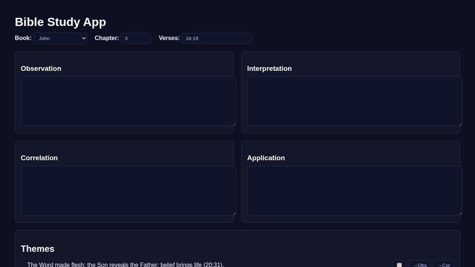
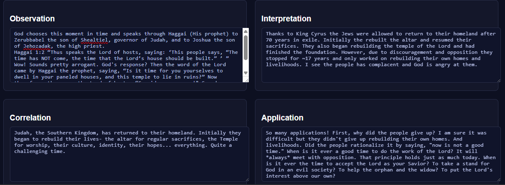

I might be jumping the gun here, but AI's latest product launch was ChatGPT-5, and it's not just a little better in some ways — it's way better in every way. Stop me if I'm getting too technical with my language there (little better, way better). So I jumped right on it and put it to the test. AI has always been good at writing code, but now it's operating in the stratosphere. Here's what I asked it to do — “Hello, Mr. ChatGOD-5. I want you to create an app or online webpage to assist me in my Bible study. There should be four qualitative input boxes for my notes in the accepted Bible study categories: Observation, Interpretation, Correlation, and Application. Make sure it auto-saves when I move from one chapter or verse to another. I'd also like relevant Bible references included, with the ability to copy them into the four categories above. And I'd like it to have access to and provide insights from my favorite Bible commentary, the Believer's Bible Commentary.” I forgot to also ask it for auto-generated study or quiz questions once you finish a chapter or book — next time.
If any of you want to give it a try, here it is: codepen.io/Erv-the-encoder


Comments